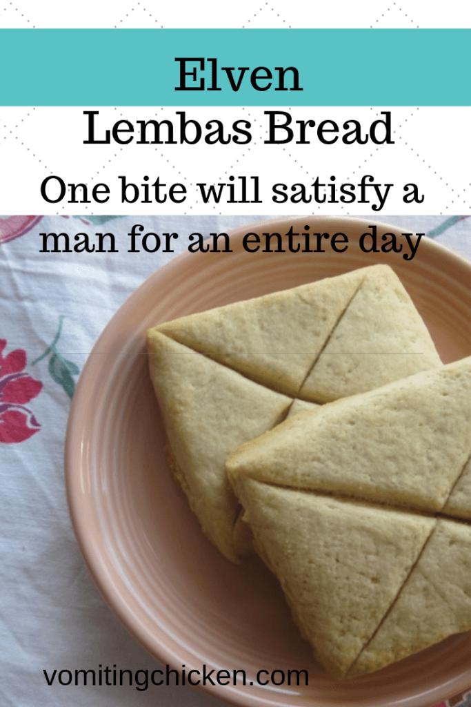

Lembas bread

Description
One bite will satisfy a man for a day!
Elven Lembas bread, also called Way bread, was a special type of bread or cake made by the Elves in Tolkien’s books.
It was pocket-sized and exceedingly nutritious. It stayed fresh for months when wrapped in leaves,
and was a type of superfood carried along on long journeys. Think super-powered energy bars.
Ingredients
- 1 cup butter
- 1/2 cup brown sugar or 1/4 cup honey
- 2 cups unbleached flour
Instructions
- Preheat oven to 325 degrees.
- Cream together the butter and sugar or honey.
- Add the flour and mix until thoroughly incorporated.
- Put out on suitable surface and knead until quite smooth,
about 5 minutes, adding a bit of flour if necessary to keep dough from sticking.
- Roll out to about ¼ inch thickness and cut into 3" to 4" squares,
scoring with a knife halfway through each square with a butter knife.
- Place on buttered cookie sheet and bake for about 20 to 25 minutes, or until lightly golden brown.
** Not suitable for Gollum or the Orcs**